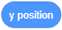
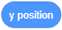
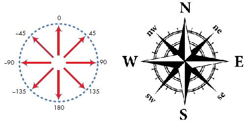

Tell Me Where To Go - Coordinates And Direction¶
After getting to know the basics of the environment, it is time to learn about how you can send your sprites to the desired location on the stage. To do that, you need to know how the stage is organized and which commands enable movement.

The Stage
When you open Scratch, the stage is automatically created: a white rectangle 480 dots wide and 360 dots high. The smallest dot that can be displayed on a computer graphics screen is called Pixel.
The Stage is where your stories, games and animations will run. It is stationary, like an aquarium, but its inhabitants - Sprites are always moving and interacting with each other. In order to control the sprites’ movements easily, each spot on the stage is assigned an address - coordinates x and y, these coordinates represent the distance of that particular spot from the center of the stage. The spot, which is located at the center of the stage has the coordinates х=0 and у=0, or (0,0).
The coordinates allow us to accurately move our sprites around the stage and position them anywhere we want (x, y). The current position of the sprite can be seen in the active sprite’s information.
Functions of the Motion Blocks
All commands, which enable positioning of the sprite in the desired location and control its direction and movement, are located in the group of blocks called Motion. In this lesson, you are going to learn more about motion blocks and how to use reporter blocks, by looking at examples and doing exercises. Reporter blocks do not correspond to language commands, and they cannot stand independently in a script. The function of a reporter block from the Motion group is to store the current coordinates and directions of Sprites.
Motion Reporters
In this group there are  and  blocks, which contain the current information on the position of the sprite (its x and y coordinates), and the
and  blocks, which contain the current information on the position of the sprite (its x and y coordinates), and the  block, which represents the direction of the sprite.
block, which represents the direction of the sprite.
If you want to see the current coordinates and the direction of the sprite, you need to click on the checkbox next to the desired block. If you click on the checkboxes next to motion reporters, displays with which you can monitor the current coordinates and direction of the sprite will appear on the stage.

Absolute and Relative Motion
You can send your sprite to a specific spot on the stage in two different ways: with absolute or relative motion.
Absolute Motion is moving to a specific spot - destination, regardless of the current position of the sprite.
In Scratch you can send your sprite to a given position (х,у) on the stage, that is to say, you can perform absolute motion by using the following blocks:
 - go to position (х,у),
- go to position (х,у), - glide to the position (х,у),
- glide to the position (х,у), - set coordinate x to the position,
- set coordinate x to the position,- set coordinate y to the position.
By using the block the sprite will move instantly to the given position (х,у).
Similarly, the target will be reached with the block , but the move would not be instant; it would last a given number of seconds. The higher the number of given seconds, the longer it will take the sprite to reach its destination.
Another way to set a destination in absolute motion is to independently set the coordinates x and y, using the blocks and .
Relative Motion is moving to a location defined by the number of steps the sprite will make from the current position. Of course, you also need to set the direction in which the sprite should move (right, up, etc.).
Another way to set a destination in relative motion is to independently set the coordinates x and y, by using the  and
and  blocks.
blocks.
In Scratch, you can send the sprite to a location defined by the number of steps from its current position, that is to say, you can perform relative motion by using the following blocks:
- - move a certain amount of pixels horizontally in relation to the current position,
- - move a certain amount of pixels vertically in relation to the current position (х,у),
 - turn right a certain amount of degrees in relation to the current direction,
- turn right a certain amount of degrees in relation to the current direction,- turn left a certain amount of degrees in relation to the current direction,
 - move a certain amount of steps in the given direction in relation to the current position.
- move a certain amount of steps in the given direction in relation to the current position.
 and
and 
There are three ways to set a value in the input field of the first block:
to select one of the offered values from the drop-down list, for example (0) up;
type in a new value, instead of the old, for example 45;
to rotate the blue arrow indicating the direction in the current Sprite information.
From the drop-down list you can choose towards which object the Sprite in the other block will be directed.

Direction and Rotation
In addition to the rotation blocks and , which allow you to change the direction in relation to the current direction of the sprite, in Scratch, there is an option to use blocks that set the direction regardless of the current position of the Sprite.
These are and blocks.
On the following Figure you can find the main direction values which you can set in the input field of the first block: up (North), right (East), down (South) and left (West).

You can also set other values, for example, value 45 will point the sprite in the direction of the northeast, and 135 to southeast. To point it west, you do not need to use negative numbers. You can type in numbers from 180 to 360 instead.
The second block points the sprite towards a mouse-pointer or towards some other sprite in the project. By clicking on the white triangle in the value field, you can open the drop-down list and select towards which object you want to point your sprite. For example, in the project “Dinosaur Walk”, which will be analyzed later in this lesson, the cat can be pointed towards the mouse-pointer or towards one of the three dinosaurs, which represent sprites in this project.
 Study the following examples¶
Study the following examples¶
As we have shown the easy way to make our sprite talk in our “Hello World” project, and then by doing exercises upgraded our project so that the sprite really pronounces the text, we will now show the basic commands which will enable us to move our sprite, and then we will upgrade them through different exercises.
Example 1 - Project “The Walk”¶
 Click on the Motion blocks, then drag the block to the Script Area and click on it. The cat will move 10 steps to the right.
Click on the Motion blocks, then drag the block to the Script Area and click on it. The cat will move 10 steps to the right.
 Click several times on this block and take the cat to the right edge of the screen.
Click several times on this block and take the cat to the right edge of the screen.
Clicking repeatedly on the move block has allowed the action assigned by this block, to be repeated several times. Repeating of a particular action can also be achieved by coding.
 Return the cat to the middle of the screen and click the Control blocks. Differently shaped blocks from the ones you were using will appear in the Blocks Palette - C shaped blocks with a “mouth” in which you can insert other blocks.
Return the cat to the middle of the screen and click the Control blocks. Differently shaped blocks from the ones you were using will appear in the Blocks Palette - C shaped blocks with a “mouth” in which you can insert other blocks.
 Select the block
Select the block  and drag it to the Scripts Area. Clicking on this block enables all the blocks which are inserted into it to run forever (until you stop the running of the program by clicking on the sign stop).
and drag it to the Scripts Area. Clicking on this block enables all the blocks which are inserted into it to run forever (until you stop the running of the program by clicking on the sign stop).
Insert a move block into the “mouth” of the repeat forever block and click on them. The cat will go off-screen again.
There is a way to keep the movement of the sprite inside the borders of the screen. That would be to use the block with the command if on edge, bounce. This block is located in Motion blocks.
 Stop the running of the blocks by clicking the stop sign, and then drag the block
Stop the running of the blocks by clicking the stop sign, and then drag the block  to the Scripts Area and insert it into the “mouth” of the repeat forever block, below the move block.
to the Scripts Area and insert it into the “mouth” of the repeat forever block, below the move block.
The following Script is added to the cat sprite.

By running this changed script, the cat will constantly move from one edge to the other, but when it moves to the left, it will be facing the wrong way. Of course, there is a way to fix this. One is to change the way the sprite is moving in the Sprite Information, and the other is to use one of the rotation blocks.
 Drag the block
Drag the block  from the Motion blocks and place it above the repeat forever block. Make sure that the left-right rotation mode is selected from the drop-down list of this block.
from the Motion blocks and place it above the repeat forever block. Make sure that the left-right rotation mode is selected from the drop-down list of this block.
 Put the
Put the  block at the top of the Script, and by doing this you have completed the “Walk” project.
block at the top of the Script, and by doing this you have completed the “Walk” project.
You can now run the project by clicking on the green flag and stop it by clicking on the stop sign. Save the project and continue exploring.
In our next project, we will show how you can introduce new sprites and backdrops, and how to guide a sprite by using the mouse-pointer. Therefore, before you move on to this example, watch the tutorials Add a Sprite and Add a Backdrop.
Example 2 – “The Dinosaur Walk”¶
In the previous example, we used the repeat forever block to make the cat sprite move continuously between the edges of the screen until we stop the running of the project by clicking the stop sign. In this project, we will have four sprites, and each of them will have their own scrip, which will determine their behavior. The cat will follow the mouse-pointer forever, and the remaining three sprites - the dinosaurs, will forever be directed towards the cat. The look of the stage at the beginning of the running of the project is presented in the following Figure.

Creation of the Project
You can add a new backdrop to the project by clicking the icon located on the right, next to the Choose a Sprite icon, which is used for selecting new sprites.

Click on the icon for choosing backdrops and choose the Jurassic backdrop from the backdrop library.
Choose the sprites Dinosaur1, Dinosaur2 and Dinosaur3 from the Sprites library.
Place your sprites like they are on the Figure above. Yo need to change the direction of the Dinosaur2. The default direction value for all sprites is 90 о (they are looking to the right) and their rotation style is All Around. All of these settings can be changed in the Sprite Information part or by using appropriate blocks to form scripts added to a particular sprite. In this project, we will use the first option.
In the Sprite information window set the rotation style as follows: Dinosaur1 - don’t rotate, Dinosaur2 - left/right, Dinosaur3 - all around.
To all dinosaurs add the same script, which will command them to point towards the cat during the running of the entire project. However, they will behave differently because they don’t have the same rotation style in their Sprite information settings.
For the cat sprite you need to set the commands, which will enable it to point towards the coordinates of the mouse-pointer, that is, to move across the stage the same way the user moves the mouse.
The Scrips describing the behavior of the dinosaurs and the cat are presented in the following Figure.

Run the project and move the mouse across the stage. Note that the dinosaurs are tracking its movements in different ways.
The keyboard key that will run the script is selected by clicking on the white triangle next to the key name (space) and then selecting the desired key from the drop-down list.

Example 3 – “Linear Motion”¶
Study the Use the Arrow Keys tutorial, and create a project where the cat is led around the stage with the keyboard.
Add the  block to the cat.
block to the cat.
Choose the key Right Arrow.
Choose the block from the Motion blocks and connect it to the previous block.
Choose the block from the Motion blocks and connect it to the previous block.
Press the right arrow key on your keyboard a few times. What happens?
Duplicate this script (right-click on the first block, then select Duplicate).
In the new script, replace the right arrow with the left arrow, in the block point in direction instead of 90 choose -90.
Press the left arrow key on your keyboard a few times. What happens?
 Similarly, make two more scripts: to guide the cat 10 steps up by pressing the up arrow key, or 10 steps down by pressing the down arrow key.
Similarly, make two more scripts: to guide the cat 10 steps up by pressing the up arrow key, or 10 steps down by pressing the down arrow key.
{kind=link}
Example 4 – “Motion with a Turn”¶
We are going to create one more project for moving sprites by using a keyboard, but with modified functions of the arrow keys. We will remove the blocks for direction, and we will join the left arrow key and right arrow key with the commands which rotate the sprite 15 degrees to the left or to the right. Also, we will join the up arrow key and the down arrow key with the block move 10 steps, i.e. go -10 steps. The corresponding scripts will have the following layout.

Run the project and test how you can manage sprite’s movement.
 Did you understand?¶
Did you understand?¶
Question 1¶
- 1280 pixels wide and 600 pixels high
- 800 pixels wide and 600 pixels high
- 480 pixels wide and 360 pixels high
- Correct.
- 360 pixels wide and 480 pixels high
Q-1: What are the dimensions of the Stage?
Question 2¶
- in the upper left corner of the Stage
- in the bottom left corner of the Stage
- in the center of the Stage
- Correct.
- depends on the added backdrop
Q-2: Where is the location of the point with the coordinates (0,0)?
Question 3¶
- Sensing
- Motion
- Correct.
- Control
- Looks
Q-3: To which group of blocks do the position, direction, rotation and movement management blocks belong to?
Question 4¶
- yes
- no
- Correct.
Q-4: Can the Stage run Motion blocks?
Question 5¶
{kind=link}
Question 6¶
Q-6: Which blocks enable relative motion? (Select all correct answers)

Question 7¶
Q-7: Which of the blocks represent motion reporters? (Select all correct answers)

Question 8¶
{kind=link}
- Southeast
- There it shows a 135 degrees angle.
- Southwest
- There it shows a -135 degrees angle.
- Northeast
- There it shows a 45 degrees angle.
- Northwest
- Correct.
Q-8: Which side of the world will the Sprite look at after running the  block?
block?
Question 9¶
In the following Figure you can see a Stage with five different points.

- (-200,-40)
- (-200,40)
- Correct.
- (200,-40)
- (200,40)
Q-9: What are the coordinates of the Point A?
- Point A
- Point B
- Point D
- Point E
Q-10: Which points have a negative y coordinate? (Select all correct answers)
-
By dragging the rectangles, pair the points with their coordinates.
Try again
- A
- (-200,40)
- B
- (-160,-60)
- C
- (20,0)
- D
- (100,120)
- E
- (180,-80)
Question 10¶
In the following Figure you can see a Stage with six different points.

-
By dragging the rectangles, pair the points with their coordinates.
Try again
- A
- (-160,80)
- B
- (-160,-80)
- C
- (160,-80)
- D
- (80,0)
- E
- (160,80)
- F
- (0,80)
- Point А
- This should be the point which has the same x, and the opposite value of the y coordinate as the Point E.
- Point В
- This should be the point which has the same x, and the opposite value of the y coordinate as the Point E.
- Point С
- Correct.
- Point D
- This should be the point which has the same x, and the opposite value of the y coordinate as the Point E.
Q-11: Which point is symmetrical to the Point E with respect to the x axis?
- Point А
- Correct.
- Point В
- This should be the point which has the opposite value of the x coordinate, and the same y coordinate as the Point E.
- Point С
- This should be the point which has the opposite value of the x coordinate, and the same y coordinate as the Point E.
- Point D
- This should be the point which has the opposite value of the x coordinate, and the same y coordinate as the Point E.
Q-12: Which point is symmetrical to the Point E with respect to the y axis?
- A and B
- A and C
- A and E
- D and F
Q-13: Which points are equidistant from the y axis? (Select all correct answers)
 Try it!¶
Try it!¶
Exercise 1 - Tracking the Position of the Sprite¶
Drag the cat Sprite to the upper left corner of the Stage, and then check the Sprite information to see the coordinates of the new position.
Then drag it to the upper right corner of the Stage and check again the coordinates of the position where you left it.
Repeat what you have just done by moving your Sprite to the bottom part of the Stage. In which positions on the Stage did the coordinate x have the negative value, and in which did the coordinate y?
Import the Apple Sprite from the Sprite library. A blue frame should appear around the thumbnail of the new Sprite in the Sprite list, which means that the Sprite is active. If not, click on its thumbnail in the Sprite list.
Check the variables х position and у position at the bottom of the Motion group of blocks. Apple: x position and Apple: y position monitors will appear on Stage.
Now drag the Apple Sprite to different positions on the Stage and track how its coordinates change by looking at the monitors.
Exercise 2 - Setting the Position of the Sprite by Using the Absolute Motion Blocks¶
Click on the Stage picture next to the Sprite list. A blue box will appear around the Stage thumbnail, which means that the Stage is in focus.
Click on the Choose a backdrop icon, and then choose the Xy-grid backdrop from the Backdrop library.
Now click on the Code tab to get the Block Palette instead of the backdrop list.
In the Motion blocks you will see a message Stage selected: no motion blocks, which is understandable because the Stage, which is now active, cannot move.
Click on the cat sprite in the sprite list. When a blue frame appears around the sprite’s thumbnail, the Motion blocks will return.
Drag the block to the scripts area, and then change the value of x to 120, and the value of y to 100.
Click on the changed block in the scripts area. What happens?
Drag the block to the script area, and then change the value of x to -120, and the value of y to 100. What happens when you click on this block?
Look where you can find the sprite after clicking the block in which you have previously changed the values for x and y. For example, where will the Sprite be if both coordinates are negative, if they are off-stage, etc?
Exercise 3 - Absolute and Relative Motion¶
Try to guide the Sprite from point A to point B by using different Motion blocks.
Set Хy-grid from the Backdrop library as the backdrop.
Select two new sprites from the sprite library - letters A and B (Block-A and Block-B).
Set the letter A in the lower-left corner of the Stage in the position (-200, -120), and the letter B in the upper right corner in the position (200, 120). The most precise way to do this is to add the block to the letter A (drag it to the scripts area while the letter A is active) and enter the appropriate coordinates х and у, and then click on the block. Follow the same steps for the letter B.
Add the  block to the cat, and select Block-A from the drop-down list (which will appear when you click on the white triangle in the selection box). Note.
block to the cat, and select Block-A from the drop-down list (which will appear when you click on the white triangle in the selection box). Note.  .
.
Click on the block and the cat will be behind the letter A.
Click on the  block from the Looks group of blocks and the cat will be in front the letter A.
block from the Looks group of blocks and the cat will be in front the letter A.

Now in the block select Block-B, and then click on it. The cat will immediately be in front of the letter B.
Add the  block to the cat, and select Block-A from the drop-down list, then click on it. The cat will glide for 1 second to the letter A. Note. .
block to the cat, and select Block-A from the drop-down list, then click on it. The cat will glide for 1 second to the letter A. Note. .
Try the third way. First, add the block to the cat, and from the drop-down list select the option where the cat points towards the Block-A sprite. Note.
Click on the block until the cat reaches the letter A.
Exercise 4 - Using the Rotation Style and Direction Blocks¶
Create a project in which sprites will behave the same as the sprites in the “Dinosaur Walk” project, but don’t make any changes in the Sprite information window. Instead, set the rotation style and the direction with scripts added to the sprites. Save this project under the name “Dinosaur Walk2”.
Exercise 5 - Adding New Sprites to Existing Projects¶
Use the “Walk” project for creating a new project where you will introduce a new sprite. This can be a dog or a mouse, which should always point towards the cat. Add the backdrop of your choosing. Add the rotation style to the script determining the behavior of this new sprite. Don’t make any changes to the script added to the cat. Save this project under the name “Walk2”.
 Debug it!¶
Debug it!¶
Bug 1¶
The pupil wanted to make a simple animation of the cat’s movement by changing his costume. Therefore, he/she added the following script.

However, nothing happened. What did the pupil do wrong?
Bug 2¶
The pupil wanted his sprite to step between the left and the right edge of the Stage. So he/she inserted the switch costume, move 10 steps, and the if on edge bounce blocks into the repeat forever block. However, he/she didn’t like the fact that the sprite is facing the wrong way when moving towards the left edge of the stage. What does he/she need to do to correct this?
 Summary¶
Summary¶
In this lesson, we showed how we can determine the exact position of a point on the stage by looking at the two coordinates. We can send sprites to a particular position on the stage by using the absolute and the relative motion blocks. Absolute motion is moving the sprite to a new location on the stage - destination, regardless of its previous position. On the other hand, Relative motion is changing the position of the sprite in relation to its previous position on the stage. The stage cannot run motion blocks. By looking at project examples and by doing the exercises, we learned how we can control the movement of our sprites by using our keyboard and our mouse.
Scratch projects: 2Studio
New concepts: pixel, coordinate system, coordinates, motion blocks, motion reporters, absolute motion, relative motion, direction, rotation mode.
Scratch commands:  - , , , , , , , , , , , , , , , , , ;
- , , , , , , , , , , , , , , , , , ;
 - ;
- ;  -
-  ,
,  ;
;  - .
- .
Note. Blocks marked with the sign will be discussed in the lessons that follow.
 Create a projects¶
Create a projects¶
Project 1 - “Two Players”¶
Start a new project that you will call “Two Players”. Put two sprites on the stage, one on the left and the other on the right. Set the sprites to point at each other. Add scripts which will allow them to move back and forth, and to turn clockwise and counter-clockwise.
The control keys for the first Sprite should be:
Up Arrow - The Sprite goes forward in a straight line,
Down Arrow - The Sprite goes back in a straight line,
Left arrow - The Sprite turns counter-clockwise,
Right arrow - The Sprite turns clockwise.
The control keys for the second Sprite should be:
Key W - The Sprite goes forward in a straight line,
Key S - The Sprite goes back in a straight line,
Key A - The Sprite turns counter-clockwise,
Key D - The Sprite turns clockwise.